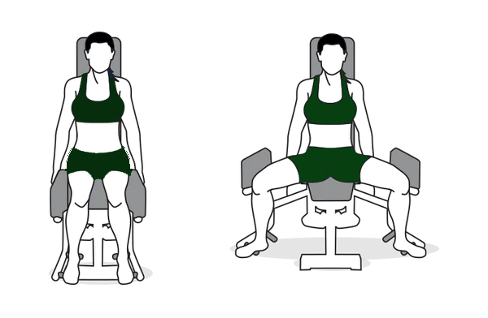

Abductions: Spread the Legs
This exercise almost exclusively targets the gluteus muscles, we also specifically attack the gluteus medius with them, giving you the round peachiness. Play around with how far you lean forward or back - just make sure your abs are tight and that your spine is stretched so you're not rounding your back.

Equipment needed:
- Abductor machine
- Alternative: Resistance bands (medium/heavy/xtra-heavy) with sliding foot pads
Instructions:
Part 1: Gluteus maximus
- Start with 65-75% of your max resistance
- Lean back against the seat if you are using the abductor machine
- Alternate version: If you are using the bands, put a heavy band above your knees and a medium band around your ankles. Lean back and rest your hands on the seat behind you for support
- Keeping your core tight, spread your legs out as far as you can, hold, then pulse. Make sure you are using mainly your knees to press out
- Slowly bring your legs back together.
- Repeat 10-15 reps
Part 2: Gluteus medius
- Increase the resistance to ~85% of your max
- Alternate version: Use an xtra-heavy band around your knees, medium or heavy around your ankles
- Move forward to the edge of the seat and lean forward so your chin is above your knees. Keep your core tight!
- Spread your knees as wide as you can, pulse out 2 more times.
- Slowly bring your knees back together
- Repeat 10-15 reps
Part 3: Burn baby burn!
- Lower the resistance down to 60-70%
- Alternate version: Use a single heavy or single medium band around your ankle
- Scoot back on the seat and lean forward, keep your legs stretch forward if you can. You should be somewhat in a piked position.
- Spread your ankles until you feel some resistance. Keep your core tight! And breathe!
- Pulse your ankles out 1-2 inches for 20 pulses
Take a break. Walk around an stretch your muscles. Repeat all parts 3-4 times.